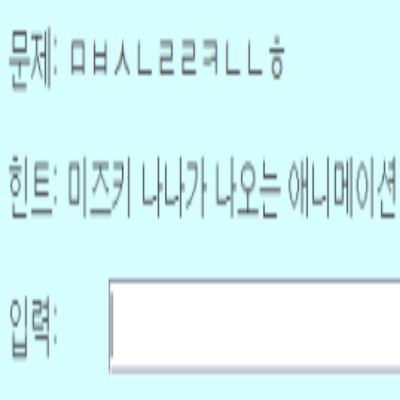
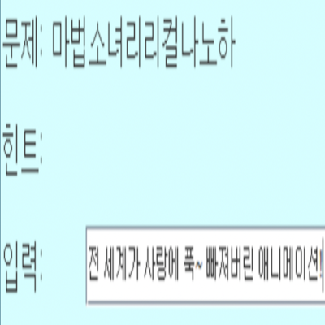
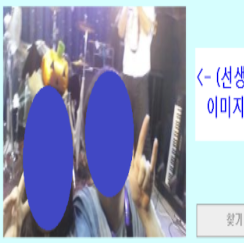
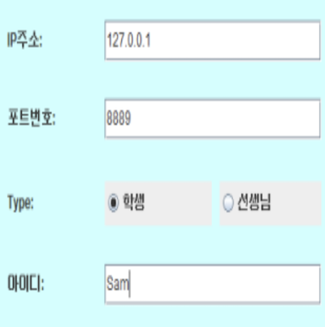

구현 기능
|  |
답안 입력 기능 학생들은 퀴즈에 대한 답안을 입력할 수 있습니다. 정답을 맞추면 해당 학생이 선생님이 되서 퀴즈를 낼 수 있습니다. |
|  |
퀴즈 출제 및 힌트 부여 기능 선생님은 퀴즈를 내고 힌트를 부여할 수 있습니다. |
|  |
사진 전송 기능 선생님은 힌트로 사진을 전송할 수 있습니다. |
|  |
서버 접속 기능 온라인 자음 퀴즈를 진행하기 위해 서버에 접속해야 합니다. |
사회에 기여하려고 한 점
창의적인 게임을 제작해서 출시하므로 게임을 하면서 색다른 재미를 느낄 수 있습니다.
창의적인 게임을 제작해서 출시하므로 게임을 하면서 색다른 재미를 느낄 수 있습니다.
배경과 목적
창의적인 게임을 만들어서 사람들한테 서비스를 제공하기 위해, 게임 개발자가 될 것에 대비하기 위해 저만의 게임을 제작하게 되었습니다.
창의적인 게임을 만들어서 사람들한테 서비스를 제공하기 위해, 게임 개발자가 될 것에 대비하기 위해 저만의 게임을 제작하게 되었습니다.
배운 점
- Java에서 Multi Thread로 비동기 방식을 활용하는 법과 Multi Threading의 구조를 알게 되었습니다.
- 이미지를 byte로 변환해서 array에 저장하는 법을 알게 되었습니다.
- Java Swing으로 클라이언트를 구현하는 법을 알게 되었습니다.
- AWS에서 서버를 구축한 후 운영하는 법을 알게 되었습니다.
- Python에서 한글로 된 문자열을 처리하는 법을 알게 되었습니다.
- Python으로 서버를 구축하는 법을 알게 되었습니다.
진행 절차
- ’Java의 정석’ 책에서 TCP/IP 프로그래밍 예제를 실행하였습니다.
- 구글에서 ‘TCP 소켓을 이용한 채팅 프로그램 예제’를 찾아 소스 코드를 분석하였고 구현 방법을 익혔습니다. 여기서, 예제에서는 Multi Thread로 비동기 방식을 사용하고 있었습니다.
- 예제를 수정해서 구현 방법 그대로 구현하였습니다.
- 한글 낱말에서 자음을 추출하는 법을 몰라서 구글에서 검색하였습니다.
- 후에는 이미지를 전송해서 힌트를 알려주는 기능도 추가하였습니다. 이것은 이미지를 byte array로 변환해서 전송하는 방식을 사용하였습니다.
- 이렇게 해서 원하는 프로그램을 구현할 수 있었습니다.
역량 강화를 위해 가장 노력한 점
Java Swing으로 클라이언트 구현, Python으로 서버 구축 및 AWS에서 실행
Java Swing으로 클라이언트 구현, Python으로 서버 구축 및 AWS에서 실행
전체 구조

사용 기술
Java, Python, TCP, AWS
Java, Python, TCP, AWS
개발 환경
Eclipse IDE, Python IDLE, Terminal in Mac
Eclipse IDE, Python IDLE, Terminal in Mac
부연 설명